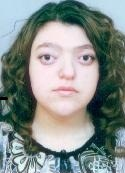

За мен:
Казвам се Ася Везирова, живея в София, но съм от провинцията. Настоящата ми работа е към администрацията на една фирма, но много искам да стана Front-end програмист.
Моето мото е:
Не се страхувай да преследваш мечтите си и да бъдеш себе си!
Помагай на другите, винаги когато можеш!
Професионално резюме
Образование и обучение:
Завършила съм средното си образование в Гимназия за Чужди Езици „Екзарх Хосиф I” – гр. Ловеч, с профил Английски и Немски език. От 2007 до 2011г. учих за бакалавър в СА „Д. А. Ценов” – гр. Свищов, със специалност "Бизнес Информатика". По време на бакалавърската ми степен заминах за Пасау, Германия, по Програма „Еразъм” за един семестър, с обучение на английски език. От 2012 до 2013г. учих отново в университета СА „Д. А. Ценов” и за магистър, със специалност отново "Бизнес Информатика".
Трудов стаж
От края на 2015г. работя като Оператор Обслужване на клиенти към „Сиксти Кей ЕАД“. Работата ми е свързана с продуктите и сайтовете на eBay на английски и немски език;
Преди това съм работила в един хотел, в Националния Парк на Англия. Там работех като супервайзор, в продължение на година.
нагореМои проекти:
Контакти
| Телефон: | 0888 888 888 |
|---|---|
| Email: | vez.asya@gmail.com |
| LinkedIn: | Ася Везирова |